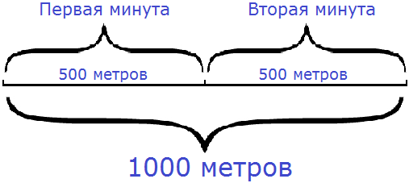

В этом уроке мы рассмотрим три физические величины, а именно расстояние, скорость и время.
Содержание урокаРасстояние
Расстояние мы уже изучали в уроке единицы измерения. Говоря простым языком, расстояние это длина от одного пункта до другого. (Пример: расстояние от дома до школы 2 километра).
Имея дело с большими расстояниями, в основном они будут измеряться в метрах и километрах. Расстояние обозначается латинской буквой S. Можно обозначить и другой буквой, но буква S общепринята.
Скорость
Скоростью называют расстояние, пройденное телом за единицу времени. Под единицей времени подразумевается 1 час, 1 минута или 1 секунда.
Предположим, что двое школьников решили проверить, кто быстрее добежит от двора до спортплощадки. Расстояние от двора до спортплощадки 100 метров. Первый школьник добежал за 25 секунд. Второй за 50 секунд. Кто добежал быстрее?
Быстрее добежал тот, кто за 1 секунду пробежал бóльшее расстояние. Говорят, что у него скорость движения больше. В данном случае скорость школьников это расстояние, которое они пробегают за 1 секунду.
Чтобы найти скорость, нужно расстояние разделить на время движения. Давайте найдём скорость первого школьника. Для этого разделим 100 метров на время движения первого школьника, то есть на 25 секунд:
100 м : 25 с = 4
Если расстояние дано в метрах, а время движения в секундах, то скорость измеряется в метрах в секунду (м/с). Если расстояние дано в километрах, а время движения в часах, скорость измеряется в километрах в час (км/ч).
У нас расстояние дано в метрах, а время в секундах. Значит скорость измеряется в метрах в секунду (м/с)
100м : 25с = 4 (м/с)
Итак, скорость движения первого школьника составляет 4 метра в секунду (м/с).
Теперь найдем скорость движения второго школьника. Для этого разделим расстояние на время движения второго школьника, то есть на 50 секунд:
100 м : 50 c = 2 (м/с)
Значит скорость движения второго школьника составляет 2 метра в секунду (м/с).
Скорость движения первого школьника — 4 (м/с)
Скорость движения второго школьника — 2 (м/с)
4 (м/с) > 2 (м/с)
Скорость первого школьника больше. Значит он добежал до спортплощадки быстрее. Скорость обозначается латинской буквой v.
Время
Иногда возникает ситуация, когда требуется узнать за какое время тело преодолеет то или иное расстояние.
Например, от дома до спортивной секции 1000 метров. Мы должны доехать туда на велосипеде. Наша скорость будет 500 метров в минуту (500м/мин). За какое время мы доедем до спортивной секции?
Если за одну минуту мы будем проезжать 500 метров, то сколько таких минут с пятью ста метрами будет в 1000 метрах?
Очевидно, что надо разделить 1000 метров на то расстояние, которое мы будем проезжать за одну минуту, то есть на 500 метров. Тогда мы получим время, за которое доедем до спортивной секции:
1000 : 500 = 2 (мин)

Время движения обозначается маленькой латинской буквой t.
Взаимосвязь скорости, времени, расстояния
Скорость принято обозначать маленькой латинской буквой v, время движения – маленькой буквой t, пройденное расстояние – маленькой буквой s. Скорость, время и расстояние связаны между собой.
Если известны скорость и время движения, то можно найти расстояние. Оно равно скорости, умноженной на время:
\[s = v \times t\]
Например, мы вышли из дома и направились в магазин. Мы дошли до магазина за 10 минут. Наша скорость была 50 метров в минуту. Зная свою скорость и время, мы можем найти расстояние.
Если за одну минуту мы прошли 50 метров, то сколько таких пятьдесят метров мы пройдем за 10 минут? Очевидно, что умножив 50 метров на 10, мы определим расстояние от дома до магазина:
v = 50 (м/мин)
t = 10 минут
s = v × t = 50 × 10 = 500 (метров до магазина)

Если известно время и расстояние, то можно найти скорость:
\[v = s : t\]
Например, расстояние от дома до школы 900 метров. Школьник дошел до этой школы за 10 минут. Какова была его скорость?
Скорость движения школьника это расстояние, которое он проходит за одну минуту. Если за 10 минут он преодолел 900 метров, то какое расстояние он преодолевал за одну минуту?
Чтобы ответить на этот, нужно разделить расстояние на время движения школьника:
s = 900 метров
t = 10 минут
v = s : t = 900 : 10 = 90 (м/мин)

Если известна скорость и расстояние, то можно найти время:
\[t = s : v\]
Например, от дома до спортивной секции 500 метров. Мы должны дойти до неё пешком. Наша скорость будет 100 метров в минуту (100 м/мин). За какое время мы дойдем до спортивной секции?
Если за одну минуту мы будем проходить 100 метров, то сколько таких минут со ста метрами будет в 500 метрах?
Чтобы ответить на этот вопрос нужно 500 метров разделить на расстояние, которое мы будем проходить за одну минуту, то есть на 100. Тогда мы получим время, за которое мы дойдем до спортивной секции:
s = 500 метров
v = 100 (м/мин)
t = s : v = 500 : 100 = 5 (минут до спортивной секции)
Понравился урок?
Вступай в нашу новую группу Вконтакте и начни получать уведомления о новых уроках
Возникло желание поддержать проект?
Используй кнопку ниже